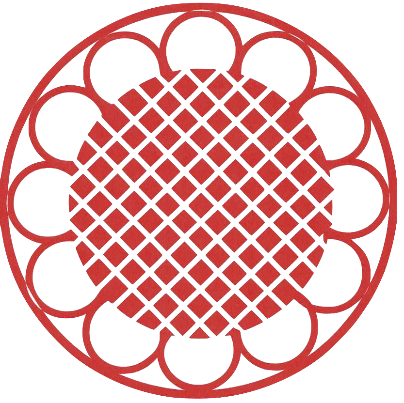
ケアセンターソレイユあざぶご利用者様とご家族様に寄り添うデイサービス
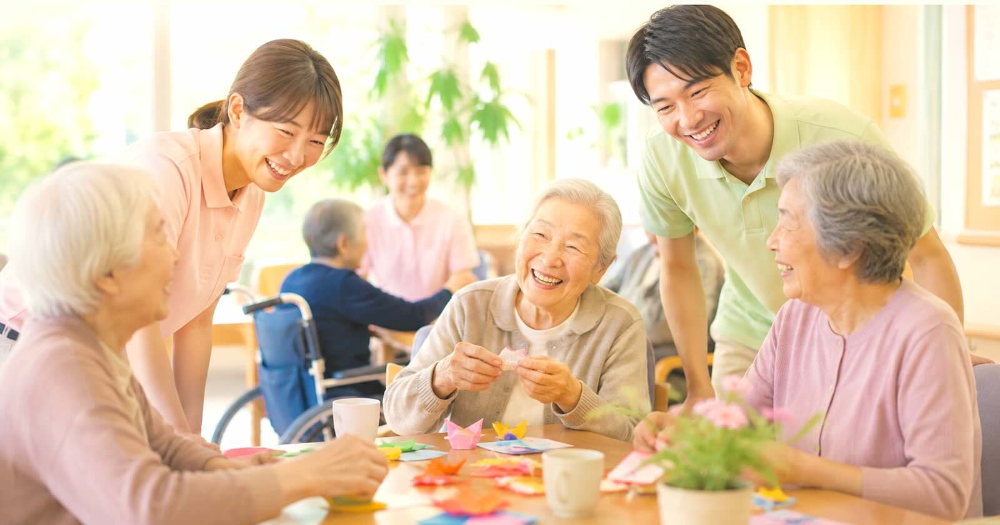
ご利用者様が安心して楽しく過ごせるサービスをご提供します
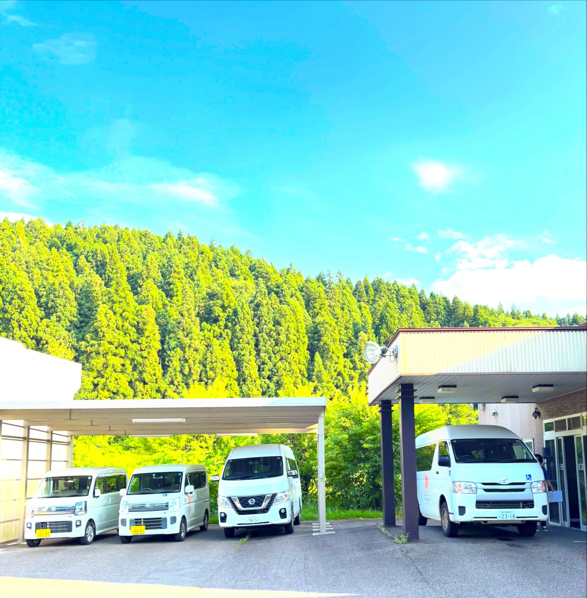
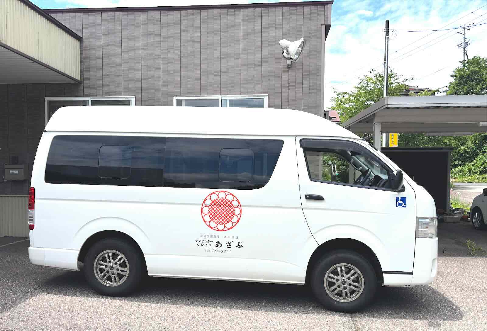
歩行に不安のある方でも安心して頂けるよう、ご自宅の前まで伺います。車いす対応車両、車内に手すりも完備。 ご自宅から施設まで安全に送迎いたします。
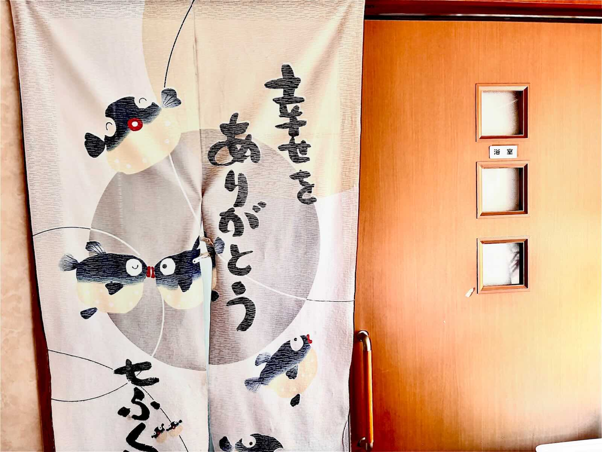
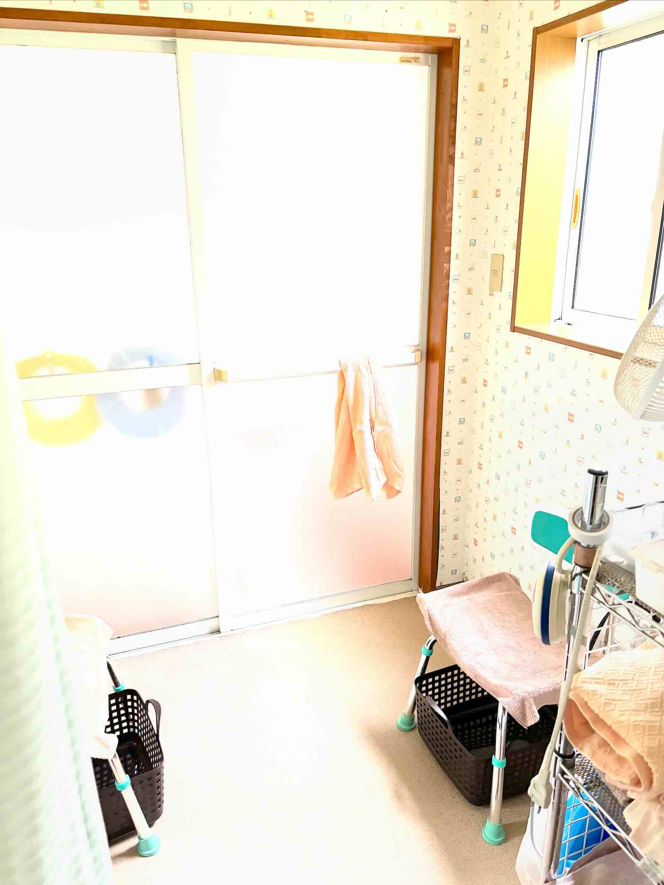
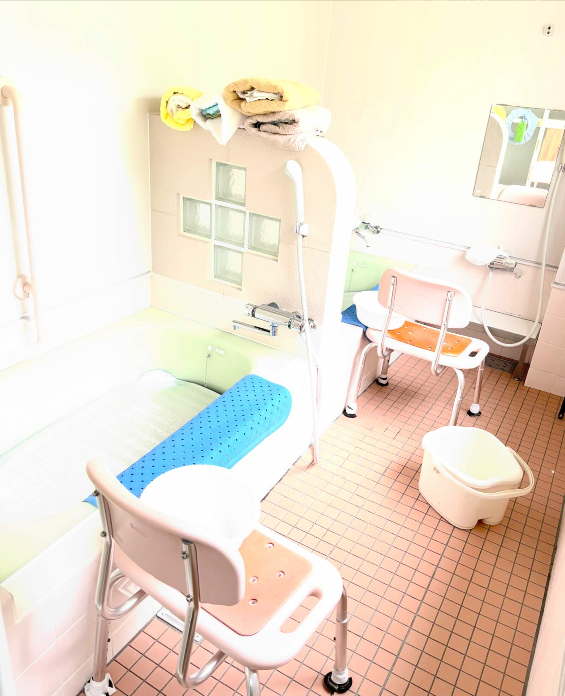
一般浴と介護浴の２種類があります。 専門スタッフがサポートし、お一人おひとりの身体状況に合わせた 安全な入浴をご提供いたします。
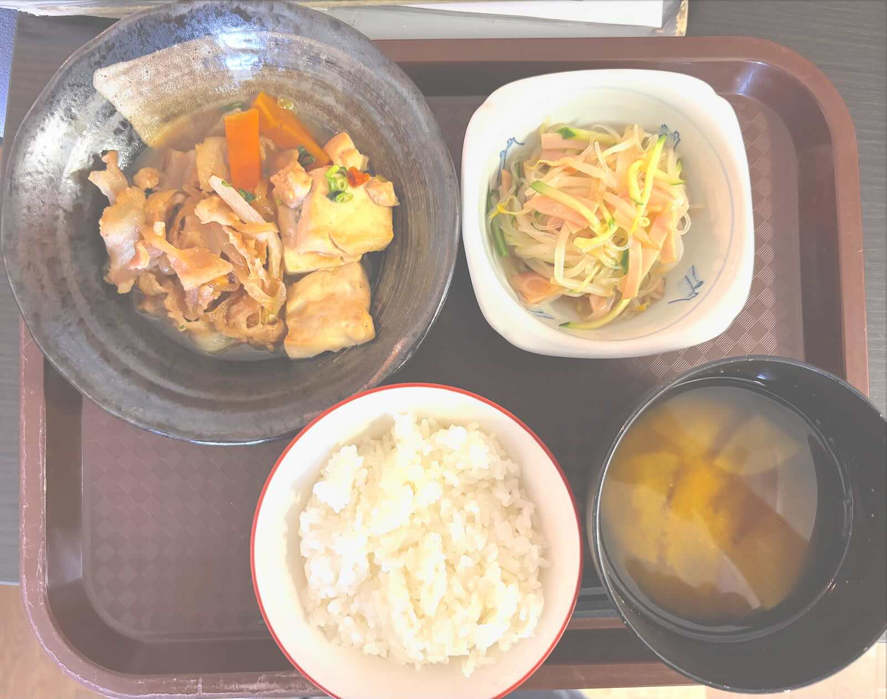
お食事は、ご利用者様にとって毎日の楽しみの一つです。 ソレイユあざぶでは、栄養バランスを考えた献立で、 心も体も元気になれるお食事をご提供しています。
季節の食材を取り入れ、彩りや美味しさにもこだわり、 「今日も美味しかった」と笑顔になっていただけるよう 一食一食を大切にしています。
また、お身体の状態や飲み込みの状態に合わせて、 きざみ食・やわらか食などにも対応し、 安心してお食事を楽しんでいただけるよう配慮しています。
ご利用者様一人ひとりに寄り添い、 「食べる喜び」をいつまでも感じていただけることを大切にしています。
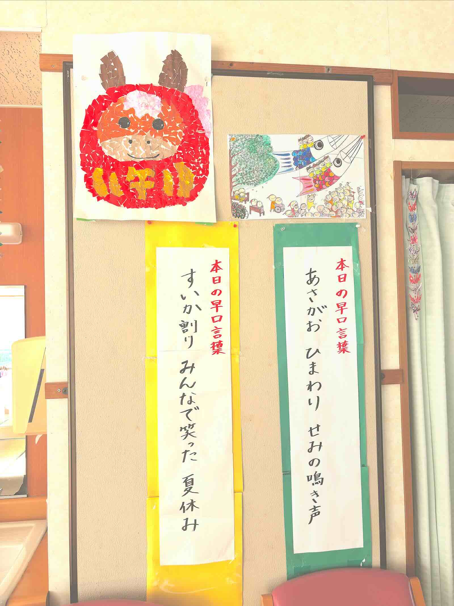
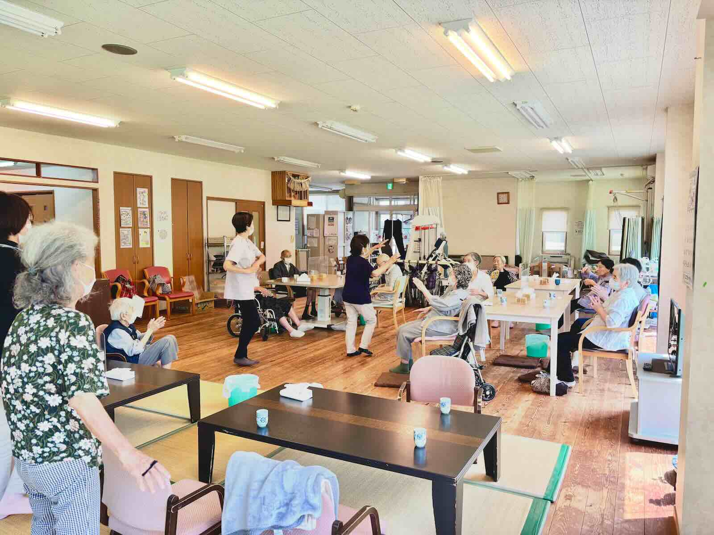
日常生活動作の維持・向上を目指し、ストレッチや体操などを行います。
例えば、年齢を重ねると、食事にむせてしまうのは なぜでしょうか。
人は年齢と共に唾液の量が減ってきます。また、筋力・体力の低下に伴い、噛む力だけでなく、 飲み込む力も低下してしまいます。
今ある筋力・体力を『守る』、低下を『緩やかにする』
それが機能訓練の目的であり、自分らしく生活することに繋がります。
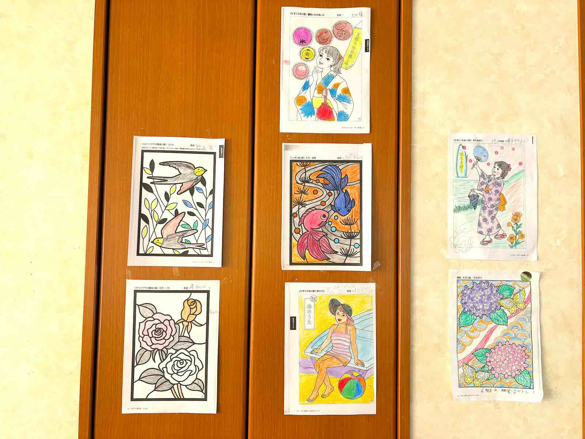
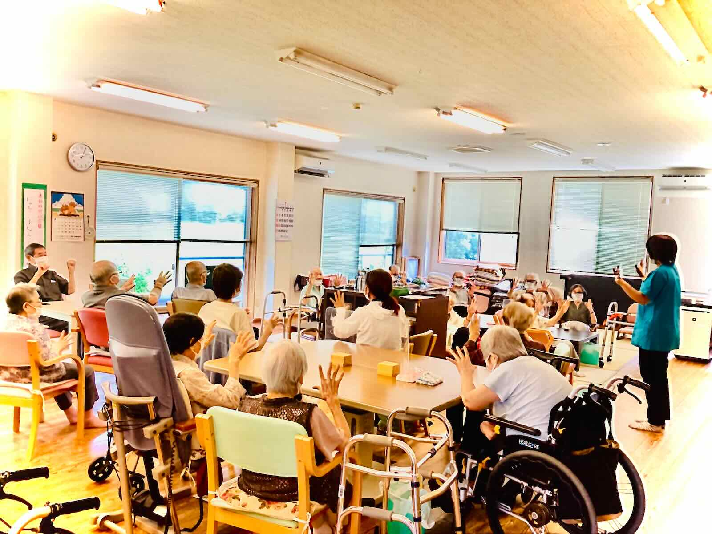
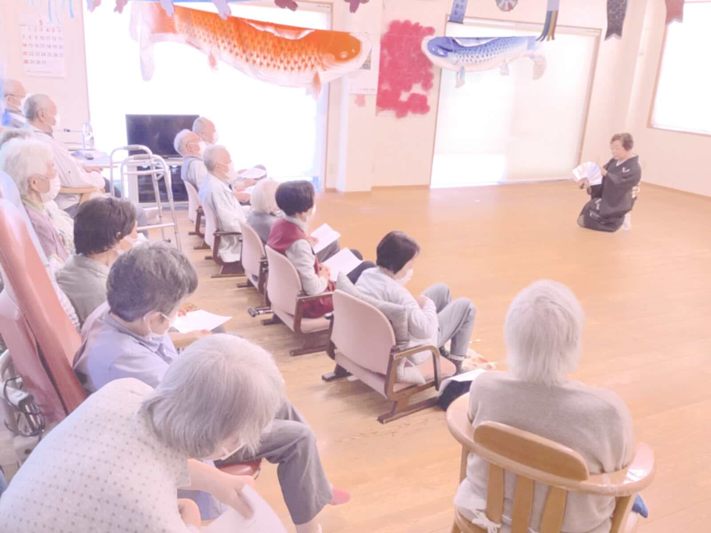
工作・ゲーム・音楽活動・季節イベントなど、 楽しく参加できるプログラムを多数ご用意しています。
施設見学・ご相談は随時受付しております。 お電話またはフォームより お気軽にお問い合わせください🌸
見学を申し込むTEL：0256-39-6711
受付時間：8:15〜17:15
お問い合わせはこちら